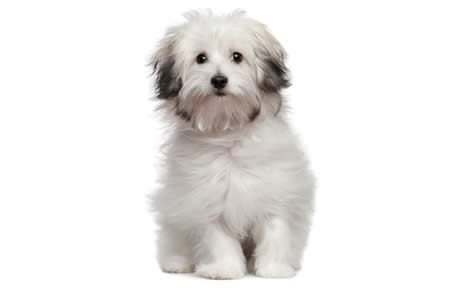

|
American Bulldog | They are great protective family dog. They are agile and affectionate. |
|---|---|---|
|  | Bolognese | A great companion and is also quite creative. |
|
Cavapoo | A mixed breed of Poodle and Cavalier King Charles Spaniel. They are playful and curious. |
|
Dachshund | They are scent-hound dogs. They are also great companions. |
|
English Foxhound | They are initially a hunting dog breed. Now, they are also great companions to have around. |
 |
American Wirehair | They are playful and has loving personality. |
|---|---|---|
| Balinese-Javanese | They are intelligent and refined. | |
| Chartreux | They are sweet, loving, and gentle. | |
 |
Devon Rex | They are friendly and very social. |
 |
Egyptian Mau | They are playful around those they know and reserved to those who are unfamiliar. |